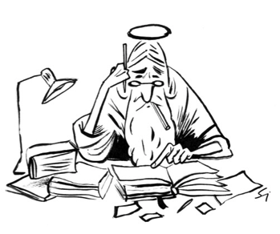

INNOVASJONSBOKA
Digitale referanser
Kapittel 1 - Introduksjon
Green Chemistry and the Phaseout of Leaded Fuel
Era of leaded petrol over, eliminating a major threat to human and planetary health
Kapittel 5 - Innovasjonsmetodikk
Systemorientert design
Kapittel 7 - Digitalisering
Hva er digital transformasjon?
Bitcoin bruker nå mer strøm enn hele Norge
Naturen vår forandres uten at vi merker det
Denne fungerer ikke
Kodak moment
«Fra skranke til gulv» et konsept for å gjøre kunden selvbetjent
Mannen som ikke ble savnet
8 Facts to Know About Food Waste and Hunger
Her er sensorene som KAN gjøre Oslos parkering smart
Digitalisering i offentlig sektor
Hva er innovasjon og hvordan innoverer man
Kapittel 9 - Bærekraft
Håndbok i sosialt entreprenørskap
Sotckholm resilisence centre
Kapittel 11 - Innsikt
Why you only need to test with 5 users
Kapittel 13 - Kreativitet
Hvordan løser vi best problemer i grupper?
Hva er forskjellen på å være kreativ og innovativ?
Hvordan er kreative mennesker, sånn egentlig?
Det er sunt å la tankene fly
Creativity
To be more creative, schedule your breaks
Hva er design thinking?
When is it for?
Oblique strategies SE
Positive deviance collaboration
Oblique strategies
Hey, what's that sound: Oblique Strategies
18 tips til dit innovationsarbejde
StimuLabs metode: Trippel diamant
Hjernebølge
Kapittel 15 - Verdi
Kano
Megler dømt for innsidehandel
Get Give Make Live - emerald insight
Get Give Make Live - NTNU
Kapittel 17 - Innovatøren og teamet
Spørsmål og svar om koronavaksiner
Hvordan kunne vaksinene bli klare så fort?
Svein (67) fikk Norges første koronavaksine
Big thinking
Kapittel 18 - Kommunikasjon
Her er historien bak Jaglands 36,9-ultimatum
Marie Amelie-effekten
The magical science of storytelling
Significant objects
Significant objects, Yo-yo
How all human communication fails, except by accident, or a commentary of Wiio's laws
Kapittel 20 - Innovasjonskultur
The failure institute
Institutt for strålende feil
The Invisible Advantage - Create a culture of innovation
Derfor skal du feste og feire når du lager feil og fiaskoer
Kapittel 21 - Foretningsmodellering
Get Give Make Live - emerald insight
Get Give Make Live - NTNU
Håndbok i sosialt entreprenørskap
Kapittel 23 - Ledelse og strategi
Innopod nr. 79. Hvilket handlingsrom tillater du deg?
Patents and innovation: trends and policy challenges
Contribution of intellectual property rights intensive industries in the European Union
Kolonial.no bytter navn til Oda og satser i Tyskland og Finland
Ble verdt en milliard dollar på under ti år
Stedet som fikk 200 millionærer over natten
Vekstmaskinen Brynjar Forbergskog: − Jeg liker det hvis en medarbeider blir forbanna
Brynjar og familien kan tjene to milliarder på å selge Nord-Norges største selskap
Innovation state of play
Historiens største flyordre i Europa: Norwegian kjøper 222 nye fly
Få gratis bøker om IP-strategi, patentering og varemerker
Creating value through IP
IP asset value as collateral: The increasing use of patents as collateral in asset-based lending
From compliance to courage in ESG
Psychological safety ≠ “anything goes”
Peggy Noonan on Steve Jobs and why big companies die
You can’t pick the winners without investing in the losers